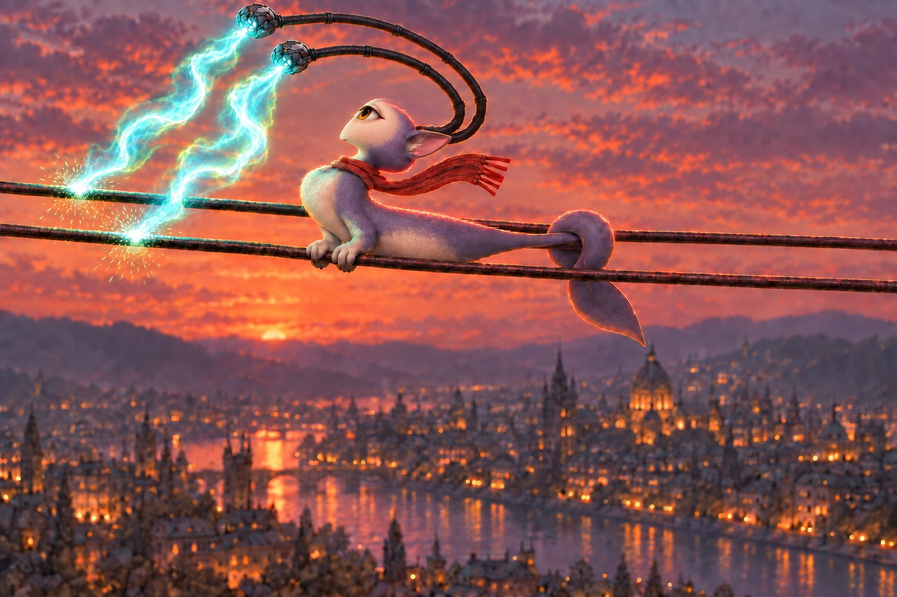
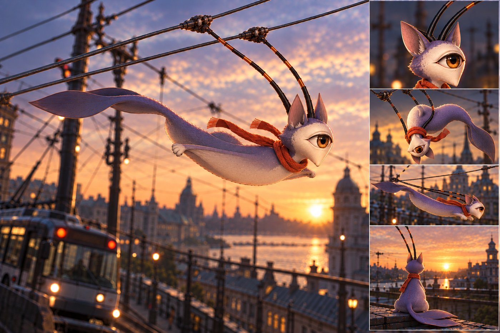
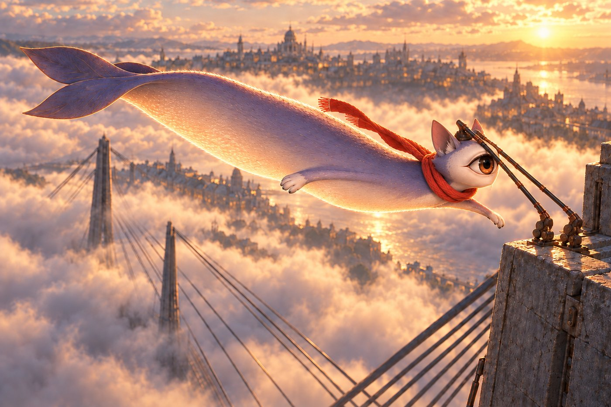
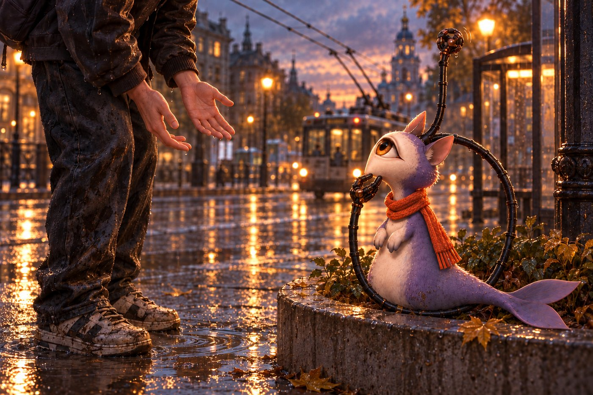
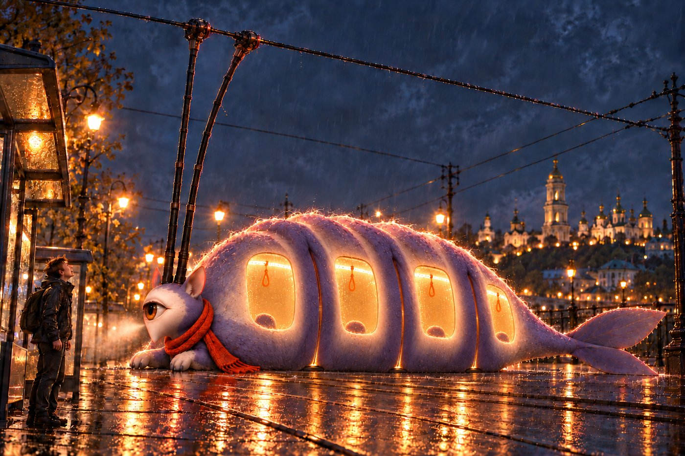
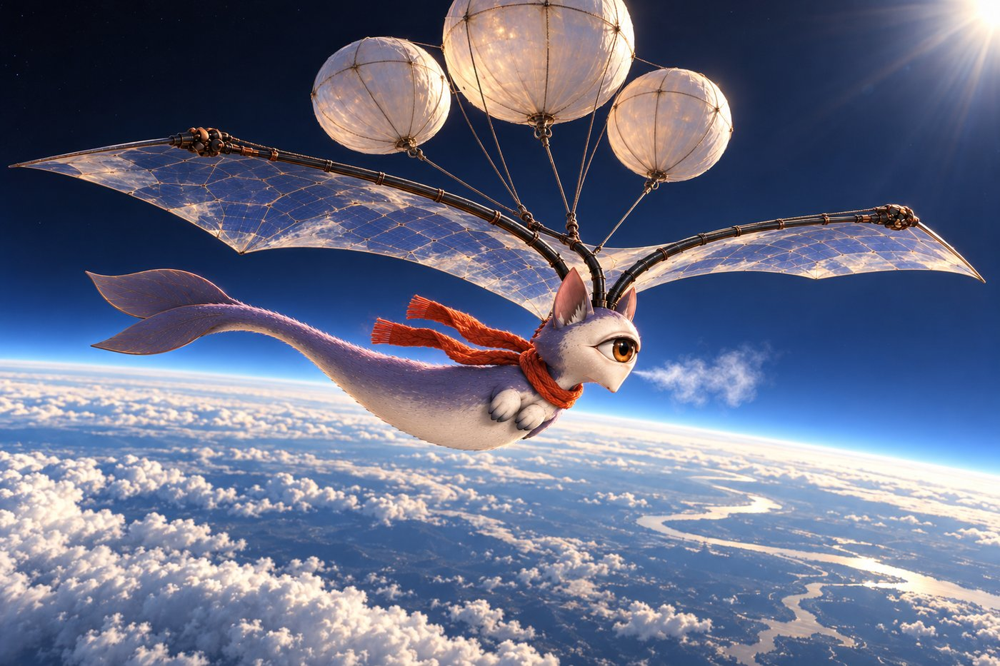
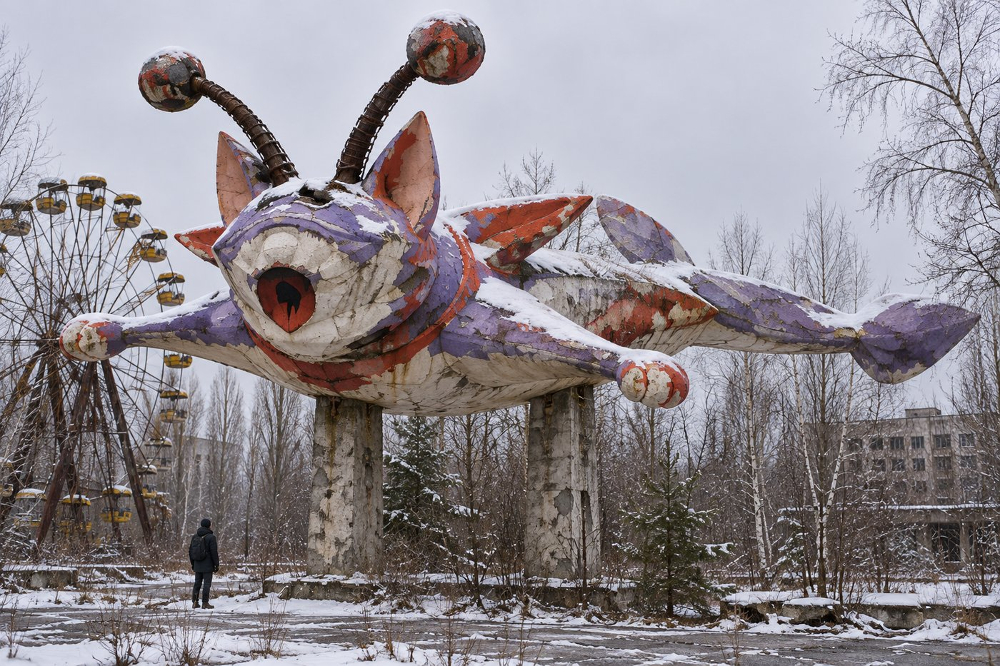
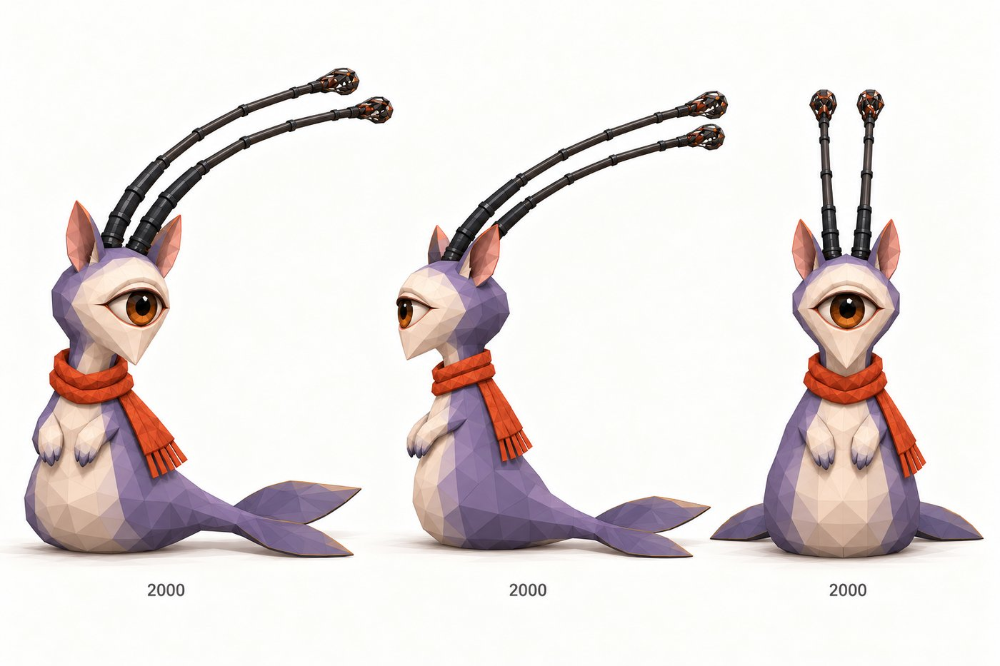
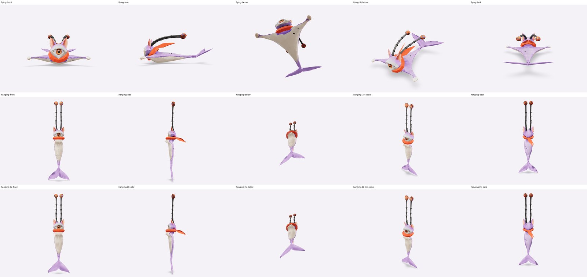

Ari is a city's spirit animal: part cat, part seal, with a whale's tail, whose horns grew over a century into trolleybus poles. She rides the trolleybus wires and wants to be like a trolleybus. These pictures are how we imagine her. One day we hope she could be built for real, and pass along the trolleybus lines doing acrobatics with her horns. Until then she lives in a small game, where her ride on the wires is simulated.
On the wires

Acrobatics. Arched over the wires at dusk, sparks where her pole tips hold the line.

The ride. Gliding on the wires above a trolleybus at sunset, with her face, a hang and a rest.

Off the bridge. A leap from a pylon of Kyiv's Pivnichnyi bridge above the morning fog.
In the city

At the stop. Someone offers a hand on a rainy evening; she listens.

Becoming a trolleybus. What she wants most, glowing at a night stop.

Higher. Under balloons and a sail, above the clouds.

As a sculpture. A full-size Ari in flight, in winter in Pripyat.
As 3D models

Low-poly Ari, 2000 faces, sitting: the model the game can draw.

Rigged Ari, flying and hanging from her poles, from five angles: a mesh that can move.